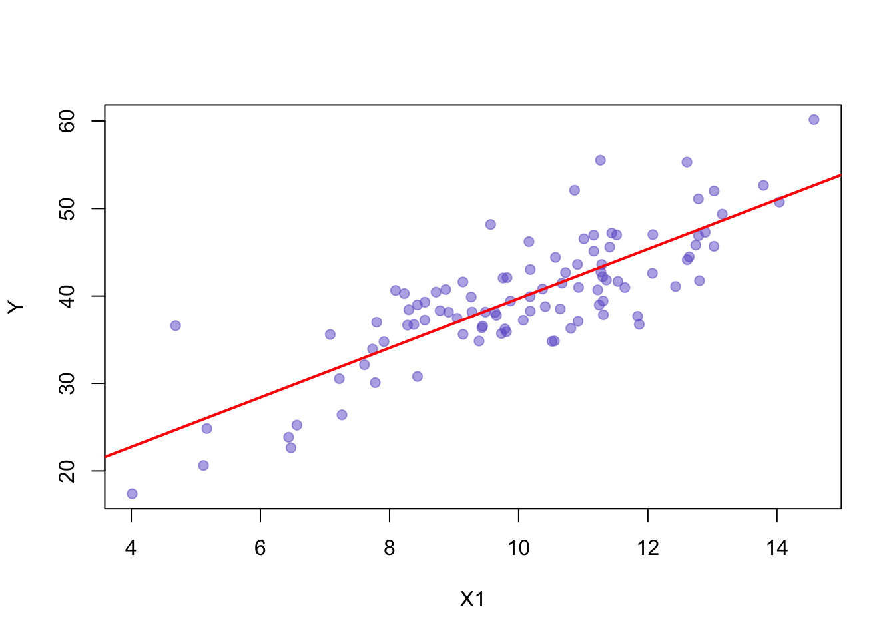

Ziel: Vorhersage einer metrischen abhängigen Variable (Kriterium) durch eine oder mehrere unabhängige Variablen (Prädiktoren).
Voraussetzungen:
kausaler Zusammenhang zwischen Prädiktoren und Kriterium
ein Modell, das die Zusammenhänge zwischen Prädiktoren und Kriterium beschreibt
Bei einer Regressionsanalyse gibt es eine abhängige Varaible (\(y\)) welche erklärt werden soll und eine oder mehrere unabhängige Variablen (\(x_1, x_2, \ldots, x_k\)), die mit der zu erklärenden Variable in Verbindung stehen.
\[
y = a + b_1 x_1 + b_2 x_2 + \ldots + b_k x_k
\]
\(a\) ist eine Regressionskonstante und \(b_1, b_2, \ldots, b_k\) sind die Regressionskoeffizienten.
Für jede zunahme von \(x_i\) um eine Einheit, nimmt \(y\) um \(b_i\) Einheiten zu.
10.1.1 Grundidee
Wir wollen eine Gerade der Form:
\[
\hat{y} = \beta_0 + \beta_1 \cdot x
\]
\(\hat{y}\) = vorhergesagter Wert von \(y\)
\(\beta_0\) = Achsenabschnitt (Intercept)
\(\beta_1\) = Steigung der Regressionsgerade
Die Parameter \(\beta_0\) und \(\beta_1\) bestimmen die Lage und Neigung der Regressionsgerade.
10.1.2 Das Problem der Abweichungen (Residuen)
Kein Modell beschreibt die Realität perfekt. Daher gibt es für jeden Datenpunkt eine Abweichung (Residuum):
\[
e_i = y_i - \hat{y}_i
\]
\(e_i\) = Residuum des \(i\)-ten Datenpunkts
\(y_i\) = tatsächlicher Wert
\(\hat{y}_i\) = vorhergesagter Wert durch die Regressionsgerade
Das Ziel der linearen Regression ist es, diese Abweichungen so klein wie möglich zu halten.
10.1.2.1 Erste (zufällige) Anpassung
Im ersten Schritt betrachten wir eine zufällige Regressionsgerade, die nicht gut zu den Daten passt. Die Residuen (grüne Linien) zeigen die Abstände zwischen den Datenpunkten und der Linie.
Code
# Setzen des Seeds für reproduzierbare Ergebnisseset.seed(42)# Definieren der Farbe mit Opacitydot_color <-rgb(0, 0, 1, alpha =0.6)line_color <-rgb(0, 0, 1, alpha =0.8)residual_color <-rgb(0.87, 0.72, 0.53, alpha =0.5)x <-rnorm(30, mean =10, sd =2)y <-2* x +rnorm(30, mean =0, sd =4)plot(x, y, pch =19, col = dot_color, xlab ="x", ylab ="y")abline(a =20, b =-0.5, col = line_color, lwd =2)for (i in1:length(x)) {segments(x[i], y[i], x[i], -0.5* x[i] +20, col = residual_color, lwd =1.5)}# Gesamtlänge der Residuen berechnen und anzeigenresidual_sum_random <-sum(abs(y - (-0.5* x +20)))text(min(x), max(y), labels =paste("Residuen:", round(residual_sum_random, 2)), pos =4, col ="blue2")
Erster Ansatz: wir zeichnen eine beliebige Gerade und visualisieren die Residuen
10.1.2.2 Logischer Verbesserungsschritt: Linie durch den Schwerpunkt
Statt zufällig eine bessere Linie zu raten, machen wir den logischen ersten Schritt: Wir zeichnen eine horizontale Linie durch den Schwerpunkt der Daten, d.h. die Mittelwerte von \(x\) und \(y\).
Wichtige Erkenntnis: Jede Regressionsgerade verläuft durch den Punkt \((\bar{x}, \bar{y})\).
Code
library(latex2exp)mean_x <-mean(x)mean_y <-mean(y)plot(x, y, pch =19, col = dot_color, xlab ="x", ylab ="y")abline(h = mean_y, col = line_color, lwd =2)points(mean_x, mean_y, pch =19, col ="red", cex =1.5)text(mean_x, mean_y, labels =TeX("$(\\bar{x}, \\bar{y})$"), pos =4, col ="red")for (i in1:length(x)) {segments(x[i], y[i], x[i], mean_y, col = residual_color, lwd =1.5)}# Gesamtlänge der Residuen berechnen und anzeigenresidual_sum_mean <-sum(abs(y - mean_y))text(min(x), max(y), labels =paste("Residuen:", round(residual_sum_mean, 2)), pos =4, col ="blue2")
Zweiter Schritt: Wir zeichnen eine horizontale Linie durch den Schwerpunkt der Daten
Im letzten Schritt berechnen wir die optimale Regressionsgerade mithilfe der Methode der kleinsten Quadrate. Diese minimiert die Summe der quadrierten Abweichungen (Residuen).
Schrittweise Herleitung
Modellgleichung:
Das lineare Regressionsmodell lautet:
\[
\hat{y} = \widehat{\beta_0} + \widehat{\beta_1} \cdot x
\]
Das Dach \(\widehat{\beta_0}\) und \(\widehat{\beta_1}\) bedeutet, dass es sich um Schätzwerte handelt.
Definition der Fehler (Residuen):
Für jeden Datenpunkt ergibt sich das Residuum als Differenz zwischen dem beobachteten Wert \(y_i\) und dem vorhergesagten Wert \(\hat{y}_i\):
\(T\) ist t-verteilt mit \(n-2\) Freiheitsgraden, da wir den Regressionskoeffizienten \(\beta_1\) und die Streuung \(\sigma_{\beta_1}\) aus der Stichprobe schätzen
\(\beta_1\) ist die Steigung der Regressionsgerade
\(s_{\beta_1}\) ist der Standardfehler der Steigung
\(\widehat{\beta}\) ist der geschätzte Regressionskoeffizient der Stichprobe
\(Y_i\) ist der beobachtete Wert der abhängigen Variablen
\(\hat{Y}_i\) ist der vorhergesagte Wert der abhängigen Variablen
\(X_i\) ist der beobachtete Wert der unabhängigen Variablen
\(\bar{X}\) ist der Mittelwert der unabhängigen Variablen
\(n\) ist die Anzahl der Beobachtungen
10.1.4.1 Konfidenzintervall der Regressionskoeffizienten
\[
\beta_1 = \widehat{\beta_1} \pm q_t \cdot s_{\beta_1} \quad \text{mit} \quad q_t \text{ aus der T-Tabelle}
\]
\(t_{n-2}\) ist der kritische Wert der t-Verteilung mit \(n-2\) Freiheitsgraden
\(s_{\beta_1}\) ist der Standardfehler der Steigung
\(\widehat{\beta_1}\) ist der geschätzte Regressionskoeffizient der Stichprobe
10.1.5 Berechnung der linearen Regression in R
# Daten erstellenx <-rnorm(30, mean =10, sd =2)y <-2* x +rnorm(30, mean =0, sd =4)# Lineare Regression durchführenmodel <-lm(y ~ x)model
Call:
lm(formula = y ~ x)
Coefficients:
(Intercept) x
4.131 1.595
Die Ausgabe der Funktion lm() zeigt uns:
Call: Die verwendete Formel für die Regression
y ~ x bedeutet: y wird durch x vorhergesagt
Coefficients: Die geschätzten Regressionskoeffizienten
(Intercept): \(\widehat{\beta_0}\) = 4.131
Dies ist der y-Achsenabschnitt
Der vorhergesagte y-Wert, wenn x = 0
x: \(\widehat{\beta_1}\) = 1.595
Dies ist die Steigung der Geraden
Für jede Einheit, die x zunimmt, steigt y um 1.595 Einheiten
Für eine detailliertere Analyse können wir die Funktion summary() verwenden:
summary(model)
Call:
lm(formula = y ~ x)
Residuals:
Min 1Q Median 3Q Max
-7.6915 -2.4266 -0.3433 2.5292 10.5802
Coefficients:
Estimate Std. Error t value Pr(>|t|)
(Intercept) 4.1311 5.1598 0.801 0.43009
x 1.5948 0.4916 3.244 0.00305 **
---
Signif. codes: 0 '***' 0.001 '**' 0.01 '*' 0.05 '.' 0.1 ' ' 1
Residual standard error: 4.147 on 28 degrees of freedom
Multiple R-squared: 0.2732, Adjusted R-squared: 0.2472
F-statistic: 10.52 on 1 and 28 DF, p-value: 0.003047
Die summary() zeigt uns zusätzlich:
Residuals: Verteilung der Abweichungen zwischen vorhergesagten und tatsächlichen Werten
Minimum: -7.691
Maximum: 10.58
Die Quartile zeigen, wie die Residuen verteilt sind
Idealerweise symmetrisch um 0
Coefficients-Tabelle:
Intercept (\(\widehat{\beta_0}\) = 4.131):
Standardfehler: 5.16
t-Wert: 0.801
p-Wert: 0.43
Signifikant auf dem nicht signifikant Niveau
Steigung (\(\widehat{\beta_1}\) = 1.595):
Standardfehler: 0.492
t-Wert: 3.244
p-Wert: 0.003
Signifikant auf dem 1% Niveau
Modellgüte:
\(R^2\) = 0.273
27.3% der Varianz in y wird durch x erklärt
Adjustiertes \(R^2\) = 0.247
Berücksichtigt die Anzahl der Prädiktoren
F-Test:
F-Wert: 10.523
Freiheitsgrade: 1 und 28
p-Wert: 0.00305
Das Modell ist statistisch signifikant
10.2 Multiple Regression
10.3 Multiple Regression
In der einfachen linearen Regression versuchen wir, den Zusammenhang zwischen einer abhängigen Variable \(Y\) und einem Prädiktor \(X_1\) zu modellieren. Doch was passiert, wenn \(Y\) nicht vollständig durch \(X_1\) alleine erklärt werden kann?
Stellen wir uns vor, wir haben Daten, bei denen wir vermuten, dass \(X_1\) einen Einfluss auf \(Y\) hat. Wir beginnen mit einer einfachen linearen Regression:
Code
set.seed(42)# Daten simulierenn <-100X1 <-rnorm(n, mean =10, sd =2)X2 <-rnorm(n, mean =5, sd =1.5)Y <-3* X1 +2* X2 +rnorm(n, sd =3)# Einfache lineare Regression Y ~ X1model_X1 <-lm(Y ~ X1)# Plotplot(X1, Y, pch =19, col =rgb(105/255, 89/255, 205/255, alpha =0.5), xlab ="X1", ylab ="Y")abline(model_X1, col ="red", lwd =2)

Erste Regression: Y in Abhängigkeit von X1
Wir erkennen, dass \(X_1\) einen deutlichen Einfluss auf \(Y\) hat. Doch die Vorhersagen des Modells sind nicht perfekt – es bleiben Residuen übrig, also Abweichungen zwischen den tatsächlichen Werten von \(Y\) und den durch das Modell prognostizierten Werten.
Diese Residuen sind nicht einfach nur zufälliges Rauschen. Sie könnten Hinweise darauf liefern, dass noch weitere Faktoren im Spiel sind, die wir bisher nicht berücksichtigt haben.
Um das zu überprüfen, untersuchen wir, ob ein weiterer Prädiktor \(X_2\) möglicherweise einen Teil dieser unerklärten Varianz in \(Y\) aufklären kann. Dazu betrachten wir die Residuen der ersten Regression und analysieren, ob sie mit \(X_2\) zusammenhängen:
Code
# Berechne die Residuen der ersten Regressionresiduals_X1 <-resid(model_X1)# Regression der Residuen auf X2model_resid_X2 <-lm(residuals_X1 ~ X2)# Plotplot(X2, residuals_X1, pch =19, col =rgb(105/255, 89/255, 205/255, alpha =0.5), xlab ="X2", ylab ="Residuen von Y ~ X1")abline(model_resid_X2, col ="orange", lwd =2)
Zweite Regression: Residuen von Y ~ X1 in Abhängigkeit von X2
Wir sehen, dass die Residuen tatsächlich einen Zusammenhang mit \(X_2\) aufweisen. Das bedeutet, dass \(X_2\) Varianz in \(Y\) erklärt, die nicht durch \(X_1\) erfasst wurde.
Man könnte diesen Prozess theoretisch weiterführen: Nachdem wir den Einfluss von \(X_2\) modelliert haben, könnten wir die neuen Residuen betrachten und versuchen, diese durch einen weiteren Prädiktor \(X_3\) zu erklären. Und so weiter.
Dieses schrittweise Vorgehen wirft jedoch ein Problem auf: Was passiert, wenn \(X_1\), \(X_2\), …, \(X_k\) miteinander korrelieren?
In diesem Fall ist es schwierig, die individuellen Effekte der einzelnen Prädiktoren zu isolieren.
Der Einfluss von \(X_2\) könnte bereits teilweise in der ersten Regression durch \(X_1\) berücksichtigt worden sein – und umgekehrt.
Durch das schrittweise Vorgehen riskieren wir, Doppelerklärungen oder verzerrte Effekte zu erhalten.
Wir brauchen einen Ansatz, der es uns ermöglicht, den Einfluss mehrerer Prädiktoren gleichzeitig zu berücksichtigen.
Beispiel
Wir versuchen, den Abfluss eines Gebirgsbachs zu modellieren.
\(Y\): Abfluss
\(X_1\): Schneeschmelze
\(X_2\): Niederschlag
Wenn wir den Abfluss \(Y\) zunächst in Abhängigkeit von der Schneeschmelze \(X_1\) modellieren, stellen wir fest, dass ein Teil der Varianz von \(Y\) nicht erklärt wird. Wir vermuten, dass der Niederschlag \(X_2\) einen zusätzlichen Einfluss haben könnte. Also modellieren wir die Residuen aus der ersten Regression in Abhängigkeit von \(X_2\).
Doch hier entsteht ein Problem: Schneeschmelze und Niederschlag sind oft korreliert. Nach starken Niederschlägen folgt häufig eine beschleunigte Schneeschmelze. Wenn wir \(X_2\) nur auf die Residuen von \(X_1\) anwenden, übersehen wir möglicherweise den gemeinsamen Einfluss beider Faktoren.
Das führt zu verzerrten Ergebnissen, da der Niederschlag sowohl einen direkten Einfluss auf den Abfluss hat als auch indirekt über die Schneeschmelze wirkt.
Bemerkung: Wenn die Prädiktoren nicht korrelieren, ist die Regression der Residuen mit weiteren Variablen möglich.
10.3.2 Beispiel: Anzahl der Kinder in Abhängigkeit von Ausbildung und Einkommen
Wir haben Daten über 20 Personen, bei denen wir die Anzahl der Kinder, die Ausbildung und das Einkommen erfasst haben. Wir gehen davon aus, dass die Anzahl der Kinder abhängig ist von der Ausbildung und dem Einkommen. Ebenfalls gehen wir davon aus, dass die Ausbildung und das Einkommen miteinander korrelieren.
Um die Güte der Schätzung zu beurteilen, rufen wir die summary() Funktion auf:
summary(regressionsmodell)
Call:
lm(formula = Kinder ~ Ausbildung + Einkommen, data = anzahlKinderDaten)
Residuals:
Min 1Q Median 3Q Max
-4.1217 -1.7934 -0.1865 1.3497 5.4407
Coefficients:
Estimate Std. Error t value Pr(>|t|)
(Intercept) 12.51855 2.17100 5.766 2.28e-05 ***
Ausbildung -0.45674 0.21658 -2.109 0.0501 .
Einkommen -0.03053 0.02372 -1.287 0.2152
---
Signif. codes: 0 '***' 0.001 '**' 0.01 '*' 0.05 '.' 0.1 ' ' 1
Residual standard error: 2.523 on 17 degrees of freedom
Multiple R-squared: 0.5502, Adjusted R-squared: 0.4973
F-statistic: 10.4 on 2 and 17 DF, p-value: 0.001124
10.3.3 Multiples Bestimmtheitsmass
Das multiple Bestimmtheitsmass \(R^2\) (Gleichung 10.1) ist ein Mass für die Güte der Anpassung des Regressionsmodells. Es gibt an, wie viel Varianz der abhängigen Variablen durch die unabhängigen Variablen erklärt wird.
Das angepasste Bestimmtheitsmass \(R^2_{adj}\) ist immer kleiner als \(R^2\) und nimmt mit zunehmender Anzahl Variablen ab, falls diese nichts zur Erklärung der Varianz beitragen.
10.3.4 F-Test
Der F-Test ist ein Hypothesentest, der die Güte des Regressionsmodells als Ganzes überprüft.
\[
F = \frac{\frac{R^2}{k}}{\frac{1-R^2}{n-(k+1)}} = \frac{\text{erklärte Varianz}}{\text{unerklärte Varianz}}
\]
\(R^2\) ist das multiple Bestimmtheitsmass
\(k\) ist die Anzahl der unabhängigen Variablen
\(n\) ist die Anzahl der Beobachtungen
Der F-Wert sagt, ob das Modell besser ist als einfach die Annahme des Mittelwerts von \(Y\) zu nehmen. D.h. ob
\[
H_0 : R^2 = 0
\]
abgelehnt werden kann.
10.3.5 Anwendungsbedingungen
Linearität
Normalverteilung der Residuen
Varianzhomogenität
Keine oder wenige Ausreisser
# Perfekte synthetische Daten generierenset.seed(42)n <-100X1 <-rnorm(n, mean =10, sd =2)X2 <-rnorm(n, mean =5, sd =1.5)# Perfekte lineare Beziehung mit normalverteiltem FehlertermY <-3* X1 +2* X2 +rnorm(n, mean =0, sd =3)# Lineares Regressionsmodellperfektes_modell <-lm(Y ~ X1 + X2)# Diagnostische Plotspar(mfrow =c(2, 2), mar =c(4, 4, 2, 1)) # Layout für 4 Plotsplot(perfektes_modell)